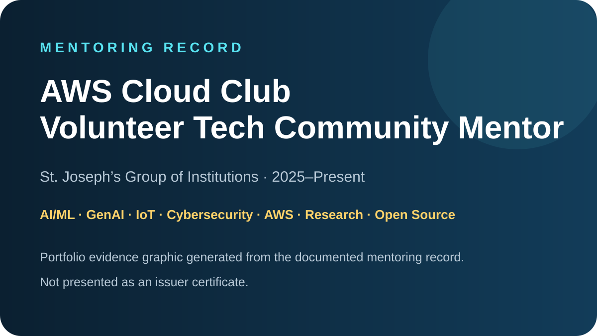

Judging · 2026
Judging · 2026Technovation Girls — Judge Gold
Gold recognition associated with judging 11+ technology projects and providing individualized, actionable feedback.

Mentoring · 2025–PresentAWS Cloud Club — Volunteer Tech Community Mentor
Mentoring undergraduate learners across AI/ML, GenAI, IoT, cybersecurity, AWS/cloud, research, open source and hackathon project development.
 Speaking · 2026
Speaking · 2026Global Power Platform Bootcamp Houston
Technical session on building AI-powered copilots in Power Platform using custom ML models.
Hands-on repository ↗Open Source · 2026GSSoC · SuperBrowser
Contributor and Project Ambassador activity spanning browser UX and backend/search engineering with React, Electron, JavaScript, Python and FastAPI.
SuperBrowser repository ↗Girls Who YAP · DoraDAOGirls Who YAP
AI Fellowship · Women in Tech · Builder Community. Girls Who YAP is a women-first, community-led AI fellowship and builder ecosystem by DoraDAO focused on learning AI through hands-on experimentation, building in public, collaborative challenges, hackathons, bounties and peer learning.
The community brings together creators, developers, students, designers, researchers and emerging builders to experiment with AI tools, develop real projects, share their work publicly and grow through collaborative technology experiences.
Artificial Intelligence · Build in Public · Hackathons · Open Source · Women in Tech · Community Collaboration
Volunteer · 2025Code Ninjas
Guided students through coding and STEM activities, reviewed projects, helped troubleshoot errors, encouraged computational thinking and supported collaborative learning.